몰입을 돕는 도구와 서비스를 찾아가는 Tiny입니다.
$ whoami
Name: Tiny
Role: Flow Researcher
Mission: Exploring the flow of work.
$ cat philosophy.txt
일상의 작은 루틴과 흐름을 모아, 거대한 몰입으로 이끌어 가는 것을 위해 오늘도 그냥 떠오르는 생각과 작은 호기심을 기반으로 만들고 정리하는 것을 목표로 합니다.
흐름들이 모여 만들어낸 결과물들입니다.
이력서 데이터 변환 및 검증 (HR지원)
WSL2 환경에서의 AI 개발 환경 구축 가이드
정보 공유를 위한 정적 페이지 프로젝트
2025년 AI 기술 타임라인 정리
새로운 흐름을 함께 만들고 싶다면 연락주세요.